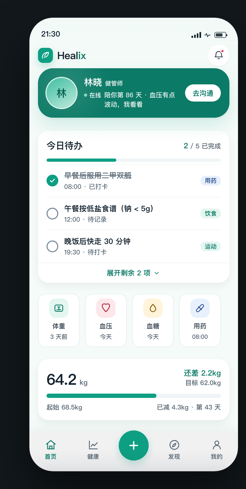
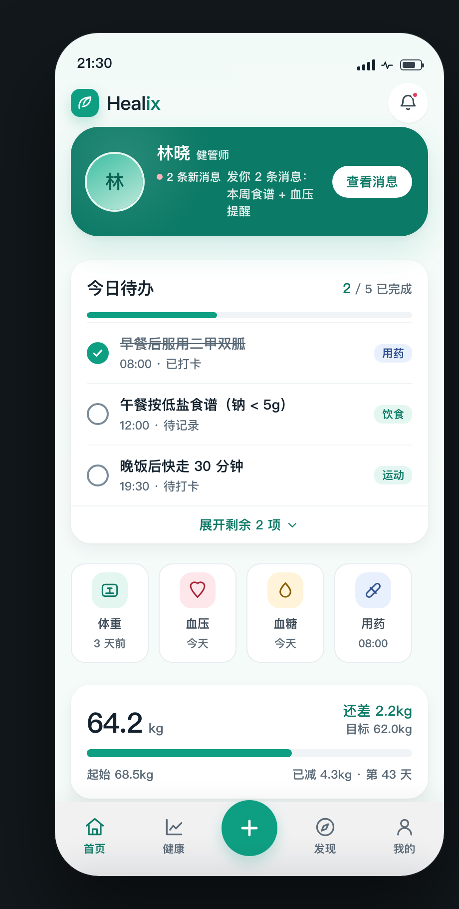
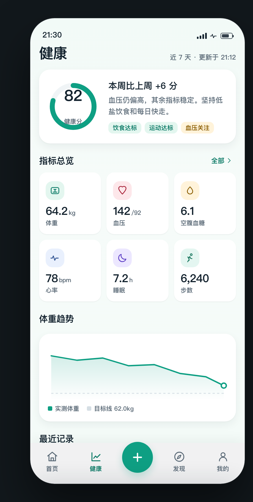
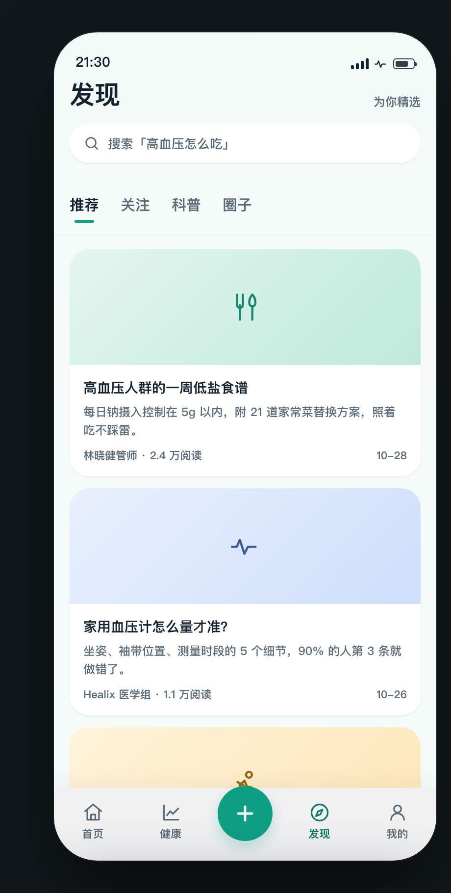
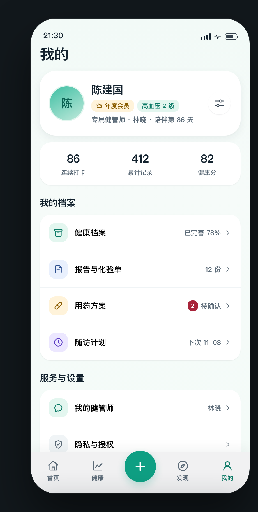
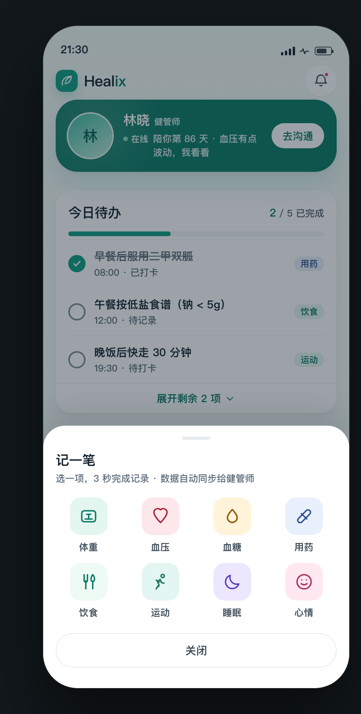

Healix C 端界面设计方案
v11
· 舵式导航 × 诊室秩序
390 × 844 · PingFang SC · 主色 teal-600 #0e9f83（不变）
WCAG AA 实测通过
入口深度 4.2 → 2.6 步

屏 1 · 首页
L1 健管师焦点卡 + 今日待办单卡 + 速记横滑

屏 1' · 焦点卡未读态
文字统一近白，语义靠状态圆点承载

屏 2 · 健康
环形健康分 + 3×2 指标瓷片区 + 体重趋势

屏 3 · 发现
单列卡片流，一屏只放 2.5 张

屏 4 · 我的
52px 行高 + 28px 圆角，宽松好点

FAB · 记一笔
4×2 八入口，核心动作 1 次点击直达